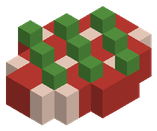
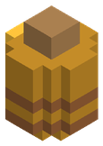

Ajo Blanco Ajo Blanco | 2 | | | Resistencia a la sombra +15 % | 600 s | |
 Mantequilla Mantequilla | 3 | | | | |  Odre de Leche ×2 (Barril) Odre de Leche ×2 (Barril) |
 Trigo Trigo | 3 | | | | | |
 Arroz Arroz | 3 | | | | | |
 Cebolla Morada Cebolla Morada | 3 | | | | | |
 Bayas Dulces Bayas Dulces | 3 | | | | | |
 Vaina de Cacao Vaina de Cacao | 3 | 30 | | | | |
 Limón Limón | 3 | 10 | | | | |
 Bayas Azules Bayas Azules | 3 | | | | | |
| Odre de Leche | 4 | 10 | | | | |
 Zanahoria Zanahoria | 4 | | | | | |
 Remolacha Remolacha | 4 | 15 | | | | |
 Tomate Tomate | 4 | | | | | |
 Brote de Bambú Brote de Bambú | 4 | | | | | |
 Uvas Negras Uvas Negras | 4 | | | | | |
 Chili Ígneo Chili Ígneo | 4 | | | Resistencia al hielo +30 %, Velocidad de movimiento +15 % | 300 s | |
 Pétalo de Loto Glacial Pétalo de Loto Glacial | 4 | | | Regeneración de maná 2 | 300 s | |
 Cerveza Artesanal Cerveza Artesanal | 5 | 30 | | Daño +5 % | 600 s | Trigo ×3 + Remolacha (Barril) |
 Vino de Uvas Negras Vino de Uvas Negras | 5 | | 40 | Regeneración de maná 1 | 900 s | Uvas Negras ×4 (Barril) |
 Sidra de Manzana Sidra de Manzana | 5 | 20 | | Velocidad de movimiento +8 % | 600 s |  Manzana Roja ×3 (Barril) Manzana Roja ×3 (Barril) |
 Tónico de Apnea Tónico de Apnea | 5 | | | Airtime 30 | 300 s |  Coral de burbujas + Coral de burbujas +  Alga marina ×3 (Olla) Alga marina ×3 (Olla) |
 Patata Rojiza Patata Rojiza | 5 | | | | | |
 Mazorca de Maíz Mazorca de Maíz | 5 | | | | | |
| Manzana Roja | 5 | | | | | |
 Tarro de Miel Tarro de Miel | 6 | 15 | | | | |
 Calabaza Calabaza | 6 | | | | | |
 Melón Melón | 6 | 25 | | | | |
 Higos Higos | 6 | 20 | | | | |
 Hongo Fosfórico Hongo Fosfórico | 6 | | | | | |
 Trucha de Arroyo Trucha de Arroyo | 8 | | | | | |
 Carpa Dorada Carpa Dorada | 8 | | | | | |
 Perca de Sauce Perca de Sauce | 8 | | | | | |
 Lubina Rayada de Playa Lubina Rayada de Playa | 8 | | | | | |
 Cangrejo Azul Costero Cangrejo Azul Costero | 8 | | | | | |
 Tetra Primavera Tetra Primavera | 8 | | | | | |
 Barbo de Otoño Barbo de Otoño | 8 | | | | | |
 Carne Dracónica Carne Dracónica | 10 | | | | | |
 Hidromiel Hidromiel | 10 | | | Vida 20, Regeneración 2 | 900 s | Tarro de Miel ×2 + Trigo (Barril) |
 Fruta Astral Fruta Astral | 10 | | 60 | Maná 25 | 600 s | |
 Patata Asada Patata Asada | 14 | | | | | Patata Rojiza (Hoguera) |
 Mazorca Asada Mazorca Asada | 14 | | | | | Mazorca de Maíz (Hoguera) |
 Pez Payaso Tropical Pez Payaso Tropical | 14 | | | | | |
 Cirujano Azul Real Cirujano Azul Real | 14 | | | | | |
 Cirujano Amarillo Cirujano Amarillo | 14 | | | | | |
 Pez Ángel de Coral Pez Ángel de Coral | 14 | | | | | |
 Siluro del Fango Siluro del Fango | 14 | | | | | |
 Anguila de Azufre Anguila de Azufre | 14 | | | | | |
 Salmón Plateado de Altura Salmón Plateado de Altura | 14 | | | Resistencia al hielo +25 % | 600 s | |
 Trucha de Pino de Taiga Trucha de Pino de Taiga | 14 | | | | | |
 Pez Lagarto de Arcilla Pez Lagarto de Arcilla | 14 | | | | | |
 Carne Asada Carne Asada | 18 | | | | |  Carne cruda (Hoguera) Carne cruda (Hoguera) |
 Sashimi de Arrecife Tropical Sashimi de Arrecife Tropical | 18 | | | Velocidad de ataque +15 %, Watervision 20 | 720 s | Pez Payaso Tropical + Cirujano Azul Real + Limón (A mano) |
 Guiso Tradicional del Pescador Guiso Tradicional del Pescador | 20 | | | Vida 30, Velocidad nadando +25 % | 900 s | Trucha de Arroyo + Patata Rojiza + Cebolla Morada (Olla) |
 Sopa de Setas del Bosque Sopa de Setas del Bosque | 20 | | | Regeneración 5 | 30 s |  Seta roja + Seta roja +  Seta parda + Seta parda +  Sal (Olla) Sal (Olla) |
 Trucha de Arroyo a la Brasa Trucha de Arroyo a la Brasa | 20 | | | | | Trucha de Arroyo (Hoguera) |
 Carpa Dorada a la Brasa Carpa Dorada a la Brasa | 20 | | | | | Carpa Dorada (Hoguera) |
 Perca de Sauce a la Brasa Perca de Sauce a la Brasa | 20 | | | | | Perca de Sauce (Hoguera) |
 Lubina Rayada de Playa a la Brasa Lubina Rayada de Playa a la Brasa | 20 | | | | | Lubina Rayada de Playa (Hoguera) |
 Cangrejo Azul Costero a la Brasa Cangrejo Azul Costero a la Brasa | 20 | | | | | Cangrejo Azul Costero (Hoguera) |
 Tetra Primavera a la Brasa Tetra Primavera a la Brasa | 20 | | | | | Tetra Primavera (Hoguera) |
 Barbo de Otoño a la Brasa Barbo de Otoño a la Brasa | 20 | | | | | Barbo de Otoño (Hoguera) |
 Melón de Magma Melón de Magma | 20 | | | Resistencia al fuego +60 % | 120 s | |
 Piraña Roja de la Selva Piraña Roja de la Selva | 22 | | | | | |
 Arapaima Gigante Arapaima Gigante | 22 | | | | | |
 Pez Espada Dorado Pez Espada Dorado | 22 | | | | | |
 Tiburón Leopardo de Arrecife Tiburón Leopardo de Arrecife | 22 | | | | | |
 Rape Abisal de Linterna Rape Abisal de Linterna | 22 | | | | | |
 Calamar Gigante de Tinta Calamar Gigante de Tinta | 22 | | | | | |
 Bacalao Glacial Milenario Bacalao Glacial Milenario | 22 | | | | | |
 Sábalo de los Manglares Sábalo de los Manglares | 22 | | | | | |
 Brocheta de Carne Asada Brocheta de Carne Asada | 24 | | | Daño +10 %, Regeneración 1 | 600 s | Carne cruda +  Palo (Hoguera) Palo (Hoguera) |
 Pan Crujiente de Campo Pan Crujiente de Campo | 25 | 20 | | Regeneración de estamina +10 % | 600 s | Trigo ×3 (Horno) |
 Sopa de Champiñón Fosfórico Sopa de Champiñón Fosfórico | 30 | | | Light 8 | 1200 s | Hongo Fosfórico ×2 + Odre de Leche (Olla) |
 Trucha de Río a la Brasa Trucha de Río a la Brasa | 30 | | | Velocidad de movimiento +12 % | 900 s | Trucha de Arroyo + Mantequilla (Hoguera) |
 Tarta de Bayas Glaciales Tarta de Bayas Glaciales | 30 | | | Probabilidad de crítico +12 % | 1200 s | Bayas Azules ×2 +  Harina de Trigo + Tarro de Miel (Horno) Harina de Trigo + Tarro de Miel (Horno) |
 Orquídea Solar Orquídea Solar | 30 | | | | | |
 Pez Payaso Tropical a la Brasa Pez Payaso Tropical a la Brasa | 35 | | | | | Pez Payaso Tropical (Hoguera) |
 Cirujano Azul Real a la Brasa Cirujano Azul Real a la Brasa | 35 | | | | | Cirujano Azul Real (Hoguera) |
 Cirujano Amarillo a la Brasa Cirujano Amarillo a la Brasa | 35 | | | | | Cirujano Amarillo (Hoguera) |
 Pez Ángel de Coral a la Brasa Pez Ángel de Coral a la Brasa | 35 | | | | | Pez Ángel de Coral (Hoguera) |
 Siluro del Fango a la Brasa Siluro del Fango a la Brasa | 35 | | | | | Siluro del Fango (Hoguera) |
 Anguila de Azufre a la Brasa Anguila de Azufre a la Brasa | 35 | | | | | Anguila de Azufre (Hoguera) |
 Salmón Plateado de Altura a la Brasa Salmón Plateado de Altura a la Brasa | 35 | | | Resistencia al hielo +25 % | 600 s | Salmón Plateado de Altura (Hoguera) |
 Trucha de Pino de Taiga a la Brasa Trucha de Pino de Taiga a la Brasa | 35 | | | | | Trucha de Pino de Taiga (Hoguera) |
 Pez Lagarto de Arcilla a la Brasa Pez Lagarto de Arcilla a la Brasa | 35 | | | | | Pez Lagarto de Arcilla (Hoguera) |
 Pez Hongo Bioluminiscente Pez Hongo Bioluminiscente | 36 | | | Resistencia a la sombra +20 % | 300 s | |
 Pez Aguja de Hielo Azul Pez Aguja de Hielo Azul | 36 | | | | | |
 Sardina de Lava de Basalto Sardina de Lava de Basalto | 36 | | | | | |
 Pez Sombra del Ocaso Pez Sombra del Ocaso | 36 | | | | | |
 Dorado del Espejismo Dorado del Espejismo | 36 | | | | | |
 Pez Volador de las Nubes Pez Volador de las Nubes | 36 | | | | | |
 Pastel de Calabaza y Miel Pastel de Calabaza y Miel | 40 | | | Vida 60, Regeneración 1,5 | 1200 s | Calabaza + Tarro de Miel +  Huevo de Avestruz + Trigo (Horno) Huevo de Avestruz + Trigo (Horno) |
 Caldo de Arapaima con Loto Negro Caldo de Arapaima con Loto Negro | 40 | | | Airtime 30, Velocidad nadando +10 % | 1500 s | Arapaima Gigante +  Pétalo del Vacío (Olla) Pétalo del Vacío (Olla) |
 Filete de Salmón de Altura con Hierbas Filete de Salmón de Altura con Hierbas | 45 | | | Resistencia al hielo +100 % | 1500 s | Salmón Plateado de Altura + Ajo Blanco + Mantequilla (Hoguera) |
 Jalea Real Jalea Real | 50 | | | | | |
 Piraña Roja de la Selva a la Brasa Piraña Roja de la Selva a la Brasa | 55 | | | | | Piraña Roja de la Selva (Hoguera) |
 Arapaima Gigante a la Brasa Arapaima Gigante a la Brasa | 55 | | | | | Arapaima Gigante (Hoguera) |
 Pez Espada Dorado a la Brasa Pez Espada Dorado a la Brasa | 55 | | | | | Pez Espada Dorado (Hoguera) |
 Tiburón Leopardo de Arrecife a la Brasa Tiburón Leopardo de Arrecife a la Brasa | 55 | | | | | Tiburón Leopardo de Arrecife (Hoguera) |
 Rape Abisal de Linterna a la Brasa Rape Abisal de Linterna a la Brasa | 55 | | | | | Rape Abisal de Linterna (Hoguera) |
 Calamar Gigante de Tinta a la Brasa Calamar Gigante de Tinta a la Brasa | 55 | | | | | Calamar Gigante de Tinta (Hoguera) |
 Bacalao Glacial Milenario a la Brasa Bacalao Glacial Milenario a la Brasa | 55 | | | | | Bacalao Glacial Milenario (Hoguera) |
 Sábalo de los Manglares a la Brasa Sábalo de los Manglares a la Brasa | 55 | | | | | Sábalo de los Manglares (Hoguera) |
 Anguila Corrosiva de Vitriolo Anguila Corrosiva de Vitriolo | 55 | | | | | |
 Pez Carbonizado de Ceniza Pez Carbonizado de Ceniza | 55 | | | | | |
 Piraña Prehistórica Acorazada Piraña Prehistórica Acorazada | 55 | | | | | |
 Pez Fantasma Estigio Pez Fantasma Estigio | 55 | | | | | |
 Pez Cristal Resonante Pez Cristal Resonante | 55 | | | | | |
 Calamar Colosal del Leviatán Calamar Colosal del Leviatán | 55 | | | | | |
 Pez Sangre de Hierro Pez Sangre de Hierro | 55 | | | Daño +12 % | 600 s | |
 Carne Dracónica Asada Carne Dracónica Asada | 60 | | | Daño +8 % | 600 s | Carne Dracónica (Hoguera) |
 Curry Picante de Lava Curry Picante de Lava | 60 | | | Daño +20 %, Resistencia al fuego +20 % | 900 s | Sardina de Lava de Basalto + Chili Ígneo + Arroz (Olla) |
 Estofado Glacial de Loto Estofado Glacial de Loto | 70 | | 100 | Coste de hechizos +15 %, Maná 100 | 1200 s | Pétalo de Loto Glacial + Perca de Sauce + Patata Rojiza (Olla) |
 Carne Marinada Alfa | 70 | | | Daño +10 % | 600 s | |
 Raya Astral del Firmamento Raya Astral del Firmamento | 80 | | | | | |
 Pez Magma Primigenio Pez Magma Primigenio | 80 | | | | | |
 Anguila del Vórtice del Vacío Anguila del Vórtice del Vacío | 80 | | | | | |
 Pez Relámpago de Tormentita Pez Relámpago de Tormentita | 80 | | | | | |
 Pez Alfa del Génesis Pez Alfa del Génesis | 80 | | | Vida 100, Maná 100, Estamina 100, Daño +20 %, Velocidad de movimiento +10 % | 3600 s | |
 Tarro de Miel Primordial | 80 | 60 | | | | |
 Cazuela Ácida del Pantano Cazuela Ácida del Pantano | 90 | | | Resistencia al veneno +100 % | 1800 s | Siluro del Fango + Anguila de Azufre + Arroz (Olla) |
 Pez Hongo Bioluminiscente a la Brasa Pez Hongo Bioluminiscente a la Brasa | 90 | | | Resistencia a la sombra +20 % | 300 s | Pez Hongo Bioluminiscente (Hoguera) |
 Pez Aguja de Hielo Azul a la Brasa Pez Aguja de Hielo Azul a la Brasa | 90 | | | | | Pez Aguja de Hielo Azul (Hoguera) |
 Sardina de Lava de Basalto a la Brasa Sardina de Lava de Basalto a la Brasa | 90 | | | | | Sardina de Lava de Basalto (Hoguera) |
 Pez Sombra del Ocaso a la Brasa Pez Sombra del Ocaso a la Brasa | 90 | | | | | Pez Sombra del Ocaso (Hoguera) |
 Dorado del Espejismo a la Brasa Dorado del Espejismo a la Brasa | 90 | | | | | Dorado del Espejismo (Hoguera) |
 Pez Volador de las Nubes a la Brasa Pez Volador de las Nubes a la Brasa | 90 | | | | | Pez Volador de las Nubes (Hoguera) |
 Banquete del Cazador Colosal Banquete del Cazador Colosal | 120 | | | Vida 200, Armadura 30 | 1800 s | Carne cruda ×4 + Pétalo de Loto Glacial + Patata Rojiza ×2 (Olla) |
 Anguila Corrosiva de Vitriolo a la Brasa Anguila Corrosiva de Vitriolo a la Brasa | 138 | | | | | Anguila Corrosiva de Vitriolo (Hoguera) |
 Pez Carbonizado de Ceniza a la Brasa Pez Carbonizado de Ceniza a la Brasa | 138 | | | | | Pez Carbonizado de Ceniza (Hoguera) |
 Piraña Prehistórica Acorazada a la Brasa Piraña Prehistórica Acorazada a la Brasa | 138 | | | | | Piraña Prehistórica Acorazada (Hoguera) |
 Pez Fantasma Estigio a la Brasa Pez Fantasma Estigio a la Brasa | 138 | | | | | Pez Fantasma Estigio (Hoguera) |
 Pez Cristal Resonante a la Brasa Pez Cristal Resonante a la Brasa | 138 | | | | | Pez Cristal Resonante (Hoguera) |
 Calamar Colosal del Leviatán a la Brasa Calamar Colosal del Leviatán a la Brasa | 138 | | | | | Calamar Colosal del Leviatán (Hoguera) |
 Pez Sangre de Hierro a la Brasa Pez Sangre de Hierro a la Brasa | 138 | | | Daño +12 % | 600 s | Pez Sangre de Hierro (Hoguera) |
 Raya Astral del Firmamento a la Brasa Raya Astral del Firmamento a la Brasa | 200 | | | | | Raya Astral del Firmamento (Hoguera) |
 Pez Magma Primigenio a la Brasa Pez Magma Primigenio a la Brasa | 200 | | | | | Pez Magma Primigenio (Hoguera) |
 Anguila del Vórtice del Vacío a la Brasa Anguila del Vórtice del Vacío a la Brasa | 200 | | | | | Anguila del Vórtice del Vacío (Hoguera) |
 Pez Relámpago de Tormentita a la Brasa Pez Relámpago de Tormentita a la Brasa | 200 | | | | | Pez Relámpago de Tormentita (Hoguera) |
 Pez Alfa del Génesis a la Brasa Pez Alfa del Génesis a la Brasa | 200 | | | Vida 100, Maná 100, Estamina 100, Daño +20 %, Velocidad de movimiento +10 % | 3600 s | Pez Alfa del Génesis (Hoguera) |
 Banquete del Titán del Abismo Banquete del Titán del Abismo | 300 | | 150 | Vida 150, Armadura 60 | 1800 s | Calamar Colosal del Leviatán + Carne Dracónica + Melón de Magma (Olla) |
 Frasco de Elixir de Vitriolo Frasco de Elixir de Vitriolo | 400 | | | Resistencia al veneno +40 % | 300 s | |
 Manjar Celestial del Demiurgo Manjar Celestial del Demiurgo | 800 | | | Daño +25 %, Velocidad de ataque +25 %, Velocidad de movimiento +25 %, Regeneración 20 | 2700 s | Pez Alfa del Génesis + Fruta Astral + Jalea Real (Altar de la Creación) |